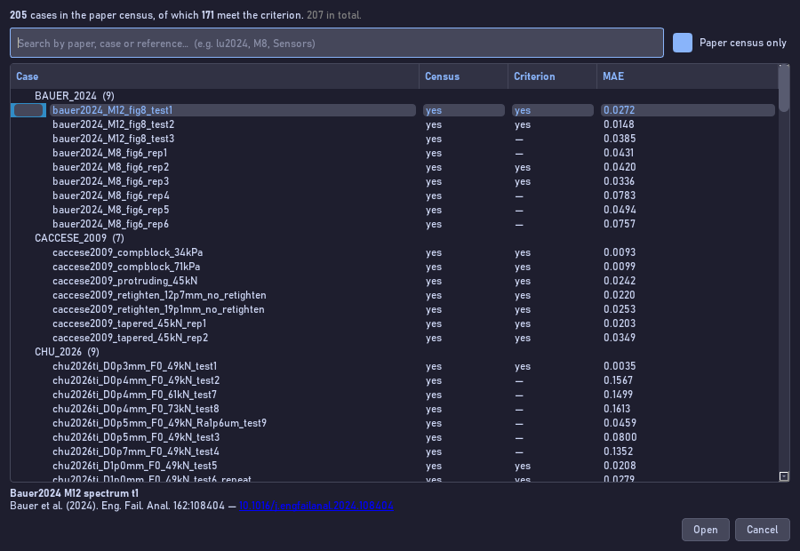
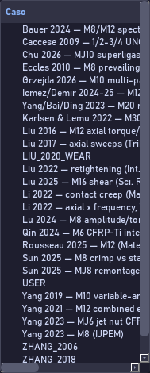
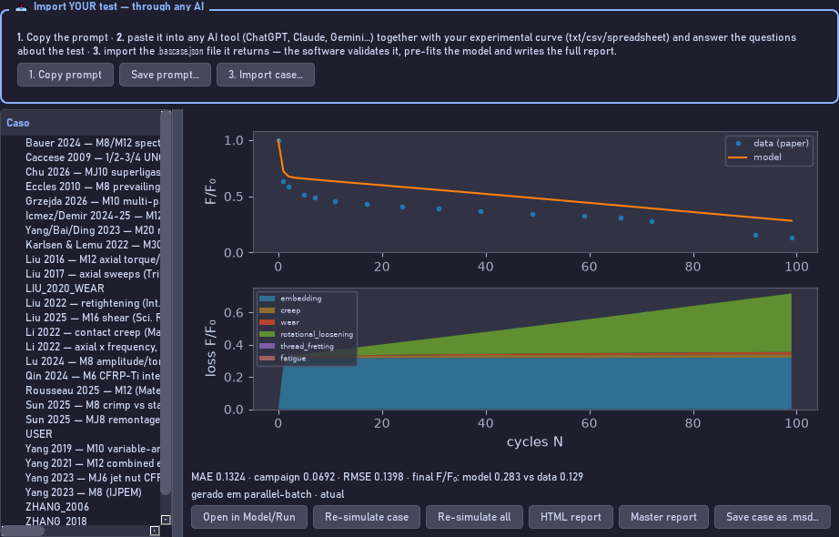
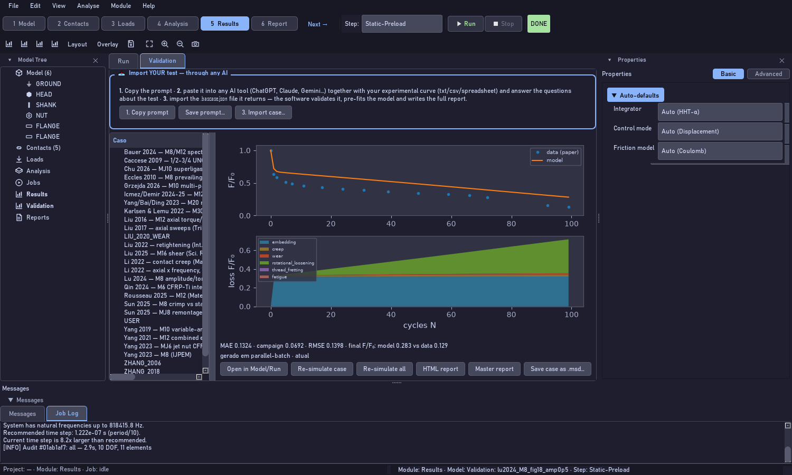

Listen to the narration · voice: en-US-AndrewNeural

The quick door: control I. The whole list by name, with search, census, criterion and error for each curve.

The full door: the tree under Results, Validation. First level the paper, second the curve, with the error beside it.

The detail of the chosen curve: digitised data against model, the decomposition by mechanism, the metrics and the buttons.

Everything in place, inside the program, with the intake panel highlighted for bringing in your own test.
Transcript
The two hundred and seven curves are not an appendix: they ship inside the program and you consult them as you would a catalogue. There are two doors. The first is control I, Import validation case. It opens the whole list by name, with search. Type the paper, the bolt size or the journal: lu twenty twenty-four, M eight, Sensors. Each line says whether the curve is in the paper's census, whether it meets the criterion, and what its mean absolute error is. In the footer, the full reference and the clickable DOI. Pick one and it opens as an editable model, with the constants exactly as adopted. The second door is the Validation tab, inside Results. There is the tree: the paper at the first level, each of that paper's curves at the second, with the error beside it. Select a curve and the panel on the right shows three things. The plot, with the digitised data as points, the aligned model as a solid line and, dashed, the engine's raw curve. The decomposition by mechanism, below, which tells you where the loss came from. And the metrics: mean absolute error, maximum residual and residual spread, each with the criterion limit beside it. Four buttons do the work. Open in Model brings the case in as a model for you to change. Re-simulate runs the engine again on that case. HTML report opens the full report of that curve, with conditions, model, residual and every constant with its provenance. Master report opens the master document, with the whole corpus and the census. A suggestion of method: before building your own model, open two or three cases similar to your joint and look at the constants they adopted. It is the fastest way to learn what a reasonable value looks like.
Every control on this screen
Control
What it does
Import validation case… (Ctrl+I)
The whole list by name, with search and the three verdict columns.
Search field
Filters by paper, case, reference or DOI.
Paper census only
Switches between the two hundred and five of the census and the two hundred and seven of the corpus.
Source → curve tree
Paper at the first level, curve at the second, error beside it.
Plot
Points: the paper's data. Solid line: the aligned model. Dashed: the engine's raw curve.
Decomposition by mechanism
How much of the loss came from embedding, creep, wear and nut rotation.
Metrics
Mean absolute error, maximum residual and residual spread, with the criterion limits.
Open in Model/Run
Brings the case in as an editable model, with the adopted constants.
Re-simulate case / Re-simulate all
Runs the engine again on that case, or on the whole corpus.
HTML report / Master report
Report of that curve, with the provenance of every constant; and the master document of the corpus.
Save case as .msd…
Writes the case model wherever you like, to start from it.
Common mistake. Treating a case's constants as universal values. They were adopted for that rig and that paper; use them as a starting point, not as an answer.